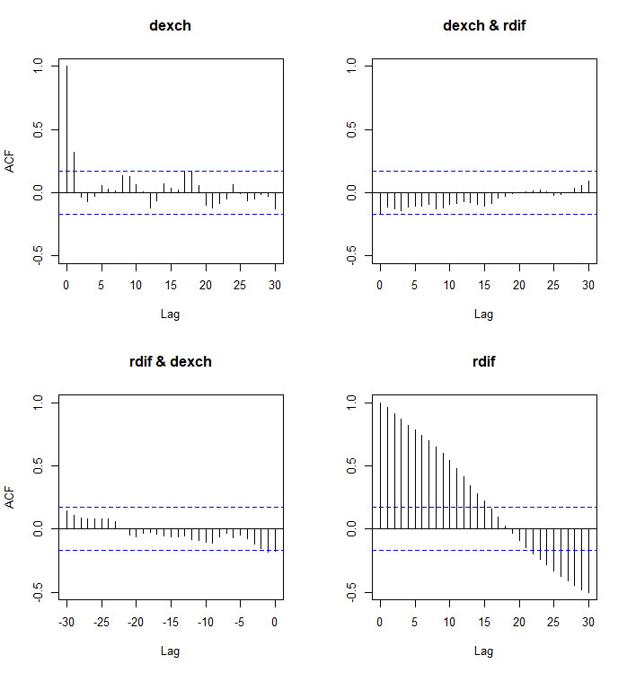

3 Multivariate stationary processes
3.1 Multivariate stochastic process
As above for univariate processes, a multiple (vector-valued) time series can be interpreted as a realization of a corresponding (multivariate) stochastic process, that is a collection of random vectors \[\begin{equation*} \boldsymbol{y}_t = (y_{1t},\ldots,y_{Kt}). \end{equation*}\]
At times this column vector is denoted (see Notation) as \(\boldsymbol{y}_t = [y_{1t}\, \cdots \, y_{Kt}]^{\prime}\).
In practice, the dataset to be analyzed is then denoted as \(\boldsymbol{y}_1,\ldots, \boldsymbol{y}_T\).
In what follows, we often denote a (multivariate) time series process by \(\{\boldsymbol{y}_{t}\}\) or just \(\boldsymbol{y}_{t}\). The notation \(\{\boldsymbol{y}_{t}\}\) emphasizes that a stochastic process is generally an infinite-dimensional random variable. Throughout this material we consider real-valued discrete time series processes.
The first and second moments of a stochastic process are defined (assuming they exist and are finite) as follows. The mean (function) or expectation (function) of \(\boldsymbol{y}_t\) is \[\begin{equation*} \boldsymbol{\mu}_{t}=\mathsf{E}\left(\boldsymbol{y}_{t}\right), \quad \left(K \times 1\right) \end{equation*}\] and the covariance function is \[\begin{equation*} \boldsymbol{\Gamma}_{s,t}=\mathsf{Cov}\left(\boldsymbol{y}_{s},\boldsymbol{y}_{t}\right)=\mathsf{E}\left[ \left(\boldsymbol{y}_{s}-\boldsymbol{\mu}_{s}\right)\left( \boldsymbol{y}_{t}-\boldsymbol{\mu}_{t}\right)^{\prime }\right]. \quad \left(K \times K\right) \end{equation*}\] By choosing \(s=t\), we obtain the covariance matrix \(\boldsymbol{\Sigma}_{t}=\boldsymbol{\Gamma}_{t,t}\), that is, \[\begin{equation*} \boldsymbol{\Sigma}_t=\mathsf{Cov}(\boldsymbol{y}_t)=\mathsf{E}\left[ (\boldsymbol{y}_t-\boldsymbol{\mu}_t)(\boldsymbol{y}_t-\boldsymbol{\mu}_t)^\prime\right]. \quad (K \times K) \end{equation*}\] In practice, we often focus on analyzing these two moments (if \(\boldsymbol{y}_t\) is normal, there is nothing else to analyze).
- In theoretical considerations we must nevertheless make assumptions on higher moments. Unless stated otherwise, the notations \(\boldsymbol{\mu}_{t}=\mathsf{E}(\boldsymbol{y}_{t})\) and \(\boldsymbol{\Sigma}_t=\mathsf{Cov}(\boldsymbol{y}_t)\) automatically assume that the underlying moments exist and are finite.
Example: Bivariate case (\(K=2\))
To illustrate these definitions concretely, consider a bivariate process composed of two time series (components), \(y_{1t}\) and \(y_{2t}\). In this case, the random vector at time \(t\) is: \[\begin{equation*} \boldsymbol{y}_t = \left[\begin{array}{c} y_{1t} \\ y_{2t} \end{array}\right]. \end{equation*}\]
Mean vector. The mean vector \(\boldsymbol{\mu}_t\) collects the expected values of the individual series: \[\begin{equation*} \boldsymbol{\mu}_t = \left[\begin{array}{c} \mu_{1t} \\ \mu_{2t} \end{array}\right] = \left[\begin{array}{c} \mathsf{E}(y_{1t}) \\ \mathsf{E}(y_{2t}) \end{array}\right]. \end{equation*}\]
Covariance matrix (at time \(t\)). The covariance matrix \(\boldsymbol{\Sigma}_t\) captures the variance of each series and the contemporaneous covariance between them. It is obtained by the outer product of the centered vector: \[\begin{align*} \boldsymbol{\Sigma}_t &= \mathsf{E}\left[ \left[\begin{array}{c} y_{1t} - \mu_{1t} \\ y_{2t} - \mu_{2t} \end{array} \right] \left[\begin{array}{cc} y_{1t} - \mu_{1t} & y_{2t} - \mu_{2t} \end{array} \right] \right] \\[10pt] &= \left[\begin{array}{cc} \mathsf{E}[(y_{1t} - \mu_{1t})^2] & \mathsf{E}[(y_{1t} - \mu_{1t})(y_{2t} - \mu_{2t})] \\ \mathsf{E}[(y_{2t} - \mu_{2t})(y_{1t} - \mu_{1t})] & \mathsf{E}[(y_{2t} - \mu_{2t})^2] \end{array}\right] \\[10pt] &= \left[\begin{array}{cc} \mathsf{Var}(y_{1t}) & \mathsf{Cov}(y_{1t}, y_{2t}) \\ \mathsf{Cov}(y_{2t}, y_{1t}) & \mathsf{Var}(y_{2t}) \end{array}\right] \end{align*}\] Here, the diagonal elements represent the variances of \(y_{1t}\) and \(y_{2t}\), while the off-diagonal elements represent the covariance between the two series at time \(t\). Note that the matrix is symmetric, so the off-diagonal elements \(\mathsf{Cov}(y_{1t}, y_{2t}) = \mathsf{Cov}(y_{2t}, y_{1t})\).
3.2 Stationarity
In short and analogously to the univariate case, a stochastic process \(\boldsymbol{y}_{t}\) \((K\times 1)\) is (strictly) stationary, if the probability distribution of a stochastic process is time-invariant.
A vector-valued process \(\boldsymbol{y}_{t} ,\, (K\times 1)\) is weakly stationary, or covariance stationary, if its second (hence also first) moments exist, are finite and time invariant, that is \[\begin{equation*} \mathsf{E}(\boldsymbol{y}_{t}) = \boldsymbol{\mu} \quad (K \times 1) \quad \mathrm{and} \quad \mathsf{Cov}(\boldsymbol{y}_{t},\boldsymbol{y}_{t+h})=\boldsymbol{\Gamma}_{h} \quad \mathrm{for \, all} \,\, t \,\, \mathrm{and} \,\,h, \end{equation*}\] where \(\boldsymbol{\Gamma}_{h}\) are \((K \times K)\) matrices. As in the univariate case:
Strict stationarity and the existence of finite first two moments imply weak stationary. The converse holds under normality but not in general. Transformations of weakly stationary processes are not generally weakly stationary.
In what follows in this course, “stationarity” refers to strict stationarity (although this terminology is not generally applied).
As we saw in the previous section, when \(\boldsymbol{y}_{t}\) is univariate (\(K=1\)), \(y_t\), the covariance function is symmetric with respect to the lag length \(h\) (see below). This does not hold when \(\boldsymbol{y}_{t}\) is vector-valued. Instead, it holds that \[\begin{align*} \boldsymbol{\Gamma}_{-h} &= \mathsf{E}\left[(\boldsymbol{y}_t-\boldsymbol{\mu})(\boldsymbol{y}_{t-h}-\boldsymbol{\mu})^\prime\right] \\ &= \left(\mathsf{E}\left[(\boldsymbol{y}_{t-h}-\boldsymbol{\mu})(\boldsymbol{y}_t-\boldsymbol{\mu})^{\prime}\right]\right)^\prime \\ &= \boldsymbol{\Gamma}_h^\prime \end{align*}\] As in the univariate case, it suffices to know \(\boldsymbol{\Gamma}_{h}\) for \(h\geq 0\) (or \(h\leq 0\)).
The covariance function \(\boldsymbol{\Gamma}_h\) contains the autocovariance and cross-covariance functions of the individual components of the process \(\boldsymbol{y}_t\). As \(\boldsymbol{y}_{t}=(y_{1t},...,y_{Kt})\), then \(\boldsymbol{\Gamma}_{h}=[\gamma _{ab,h}]\) (\(a,b=1,...,K\)), and the autocovariance function of the process \(y_{at}\) (scalar-valued \(a\)th process) is \[\begin{equation*} \gamma_{a,h} = \mathsf{E}\Big((y_{at} - \mathsf{E}(y_{at}) (y_{a, t+h} - \mathsf{E}(y_{a, t+h})) \Big). \end{equation*}\] Therefore, the autocorrelation function of the process \(y_{at}\) is defined as \[\begin{equation*} \rho_{a,h}=\gamma _{a,h}/\gamma _{a,0}, \quad a=1,\ldots,K, \end{equation*}\] and the cross-correlation function of the processes \(y_{at}\) and \(y_{bt}\) is \[\begin{equation*} \rho _{ab,h}=\gamma_{ab,h}/\sqrt{\gamma_{a,0}\gamma_{b,0}} \qquad a,b=1,\ldots,K. \end{equation*}\] Here \(\gamma_{a,h}=\gamma_{aa,h}\) and \(\gamma_{ab,h}\) (\(a\neq b\)) is the cross-autocovariance function, respectively.
From a practical standpoint, and again analogously to the univariate case, a stationary time series can be assumed to satisfy the condition \[\begin{equation*} \boldsymbol{\Gamma}_{h}\rightarrow \boldsymbol{0} \text{, as } \left\vert h\right\vert \rightarrow\infty \end{equation*}\] where convergence can be interpreted to hold for each component. In this case, \(\boldsymbol{y}_{t}\) and \(\boldsymbol{y}_{t+h}\) are nearly uncorrelated when \(\left\vert h\right\vert\) is large.
Note that \(\boldsymbol{\Gamma}_{h}\rightarrow \boldsymbol{0}\) does not follow from stationarity as such.
If one wants to estimate the first- and second-order moments of \(\boldsymbol{y}_{t}\), it suffices under \(\boldsymbol{\Gamma}_{h}\rightarrow \boldsymbol{0}\) to estimate a finite number of parameters (that is, \(\boldsymbol{\mu}\) and \(\boldsymbol{\Gamma}_{h}\), \(h=-H,...,H\), for some “large” \(H\)).
Example continues: Bivariate stationarity case (\(K=2\)). To make these matrix definitions concrete, let us again consider the bivariate case, that is two time series \(y_{1t}\) and \(y_{2t}\). For this vector process \(\boldsymbol{y}_t = (y_{1t}, y_{2t})\) to be weakly stationary, two specific conditions must be “visible” in its moments:
Time invariance of the mean vector: The expected value of each series must be constant over time, not depending on \(t\): \[\begin{equation*} \mathsf{E}(\boldsymbol{y}_t) = \boldsymbol{\mu} = \left[ \begin{array}{c} \mu_1 \\ \mu_2 \end{array}\right], \quad \text{for all } t. \end{equation*}\] Implication: Neither \(y_{1t}\) nor \(y_{2t}\) can have a trend. They must fluctuate around fixed levels \(\mu_1\) and \(\mu_2\).
Time invariance of the covariance structure: The covariance function \(\boldsymbol{\Gamma}_h\) must depend only on the lag \(h\), and not on the specific point in time \(t\): \[\begin{equation*} \boldsymbol{\Gamma}_h = \left[ \begin{array}{cc} \gamma_{11,h} & \gamma_{12,h} \\ \gamma_{21,h} & \gamma_{22,h} \end{array}\right]. \end{equation*}\]
This implies three time-invariant (stable) relationships simultaneously:
Constant variance (\(h=0\)): The volatility of \(y_{1t}\) (\(\gamma_{11,0}\)) and \(y_{2t}\) (\(\gamma_{22,0}\)) does not change over time.
Stable cross-correlation (\(h=0\)): The contemporaneous relationship between \(y_{1t}\) and \(y_{2t}\) (e.g., do they move together?) is constant.
Stable lead-lag dynamics (\(h \neq 0\)): The way \(y_{1t}\) predicts \(y_{2, t+h}\) (and vice versa) remains consistent throughout the sample. Interpretation the off-diagonal elements:
\(\gamma_{12,h} = \mathsf{Cov}(y_{1t}, y_{2,t+h})\): Measures how \(y_1\) at time \(t\) covaries with \(y_2\) at time \(t+h\).
\(\gamma_{21,h} = \mathsf{Cov}(y_{2t}, y_{1,t+h})\): Measures how \(y_2\) at time \(t\) covaries with \(y_1\) at time \(t+h\).
Important asymmetry: Unlike the autocovariance of a single series, cross-covariances are not generally symmetric in lag \(h\). That is, usually \(\gamma_{12,h} \neq \gamma_{21,h}\). For example, if \(y_1\) is a “leading indicator” for \(y_2\), then \(\gamma_{12,h}\) (current \(y_1\) vs future \(y_2\)) might be large, while \(\gamma_{21,h}\) (current \(y_2\) vs future \(y_1\)) might be zero. However, stationarity ensures that \(\boldsymbol{\Gamma}_{-h} = \boldsymbol{\Gamma}_h^\prime\), meaning: \[\begin{equation*} \boldsymbol{\Gamma}_{-h} = \left[\begin{array}{cc} \gamma_{11,h} & \gamma_{21,h} \\ \gamma_{12,h} & \gamma_{22,h} \end{array}\right]. \end{equation*}\]
3.3 IID and white noise processes
A simple example of a stationary process is the sequence of independent and identically distributed vectors (stationarity can be deduced directly from the definition). If \(\boldsymbol{y}_{t} \,\, (K\times 1)\) is such a sequence, \(\mathsf{E}(\boldsymbol{y}_{t})=\boldsymbol{\mu}\) (\(K \times 1\)) and \(\mathsf{Cov}(\boldsymbol{y}_{t})=\boldsymbol{\Sigma}\) (\(K \times K\)), and both are finite, we denote \[\begin{equation*} \boldsymbol{y}_{t}\sim \mathsf{iid}(\boldsymbol{\mu},\boldsymbol{\Sigma}). \end{equation*}\] This process is called (strict) white noise. If \(\boldsymbol{y}_{t}\) is also normally distributed, we denote \[\begin{equation*} \boldsymbol{y}_{t}\sim \mathsf{nid}(\boldsymbol{\mu},\boldsymbol{\Sigma}). \end{equation*}\]
If we replace independence by the weaker condition of zero correlation, that is \(\mathsf{Cov}(\boldsymbol{y}_{t},\boldsymbol{y}_{s})=\boldsymbol{0}, t\neq s\), then \(\boldsymbol{y}_{t}\) is weakly stationary and may be called (multivariate) weak white noise.
3.4 Sample mean and sample autocovariances
Consistency of sample mean. Let \(\boldsymbol{y}_{t}=(y_{1t},\ldots,y_{Kt})\) be a stationary process with expectation \(\mathsf{E}(\boldsymbol{y}_{t})=\boldsymbol{\mu}\) and covariance matrix \(\mathsf{Cov}(\boldsymbol{y}_{t},\boldsymbol{y}_{t+h})=\boldsymbol{\Gamma}_{k}=[\gamma_{ij,h}]\). Assume the following condition (compare with \(\boldsymbol{\Gamma}_{h}\rightarrow \boldsymbol{0}\)) \[\begin{equation*} \sum_{h=-\infty}^{\infty}\left\Vert \boldsymbol{\Gamma}_{h}\right\Vert<\infty. \end{equation*}\] Denote \(\bar{\boldsymbol{y}}=(\bar{y}_{1},...,\bar{y}_{K})\) and \(\boldsymbol{\mu}=(\mu_{1},...,\mu_{K})\). Consider the sample average \(\bar{\boldsymbol{y}}=T^{-1}\sum_{t=1}^{T}\boldsymbol{y}_{t}\) as an estimator for \(\boldsymbol{\mu}\). The estimator is
unbiased \[\begin{equation*} \mathsf{E}(\bar{\boldsymbol{y}})=T^{-1}\sum_{t=1}^{T} \mathsf{E}(\boldsymbol{y}_t)=\boldsymbol{\mu}. \end{equation*}\]
consistent estimator for \(\boldsymbol{\mu}\) and asymptotically normally distributed. See proof for consistency below
Moreover, the sample covariance function can be obtained as \[\begin{equation*} \boldsymbol{C}_{h} = [c_{ij,h}] = (T-k)^{-1}\sum_{t=1}^{T-h}(\boldsymbol{y}_{t}-\bar{\boldsymbol{y}})(\boldsymbol{y}_{t+h}-\bar{\boldsymbol{y}})^{\prime },\qquad h=0,1,...,T-1, \end{equation*}\] where \(\boldsymbol{C}_{h} = \boldsymbol{C}_{-h}^{\prime },\ h=-T+1,...,-1\). It also turns out that this estimator is consistent estimator of \(\boldsymbol{\Gamma}_h\).
In practice and as in the univariate case, covariances are replaced by correlations, that is, we typically consider the sample quantities \[\begin{equation*} r_{ab,h}=\frac{c_{ab,h}}{\sqrt{c_{a,0}c_{b,0}}}, \qquad c_{a,0}=c_{aa,0}. \end{equation*}\] It can be proved that when \(\boldsymbol{y}_{t}\sim \mathsf{iid}(\boldsymbol{\mu},\boldsymbol{\Sigma})\), then we have the asymptotic result \[\begin{equation*} r_{ab,h}\overset{as}{\sim} \mathsf{N}(0,1/T), \quad k\neq 0 \end{equation*}\] In addition, if \(R_{h}=[r_{ab,h}]\), then \(\boldsymbol{R}_{h}\) and \(\boldsymbol{R}_{l}\) are asymptotically independent, when \(h\neq l\).
Example. Below we can see the autocorrelation and cross-correlation functions from the exchange rate-interest rate data as depicted in Section 1. The critical boundaries \(\pm 1.96/\sqrt{T}\) inside which single correlations should stay with 95% likelihood if this was a realization of a \(\mathsf{iid}\) process are displayed as well. Estimated autocorrelations confirm the clear autocorrelation we could see already in time series graphs. Estimated cross-correlations, however, seem to be relatively small. Notice, however, that due to the aurocorrelation exhibited by the component series, the critical boundaries cannot be applied to the cross-correlation estimates in the same way as above.